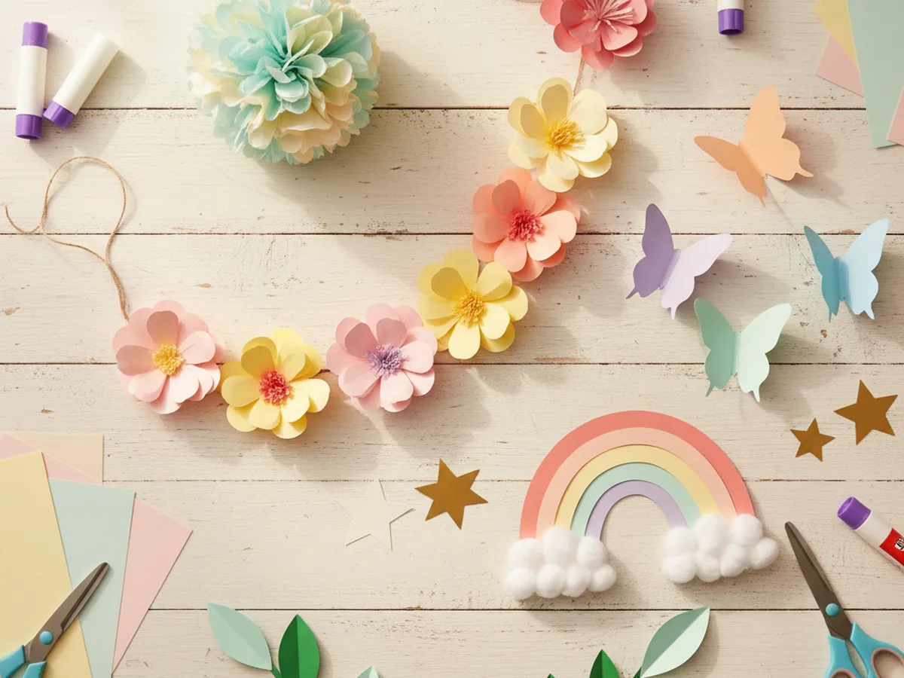
There is something so cozy about walking into a room and seeing a little piece of art your child made hanging on the wall. A few sheets of colored paper, a stick of glue, and a quiet afternoon together can turn an empty corner into the warmest part of the house. These homemade paper craft ideas for wall decoration are gathered to help you create that feeling, one beginner-friendly project at a time. 🎨
This list pulls together 20 sweet homemade paper craft ideas for wall decoration that work in a nursery, a playroom, a kitchen, or a hallway. Each one uses simple supplies, takes less than an hour, and leaves you with something pretty enough to keep up year-round. Pick one that matches your space, gather your paper, and turn a regular afternoon into a memory you both look up at every day.
What You'll Need
Most of these paper wall decoration crafts use the same handful of cozy supplies, so one trip to the craft drawer will set you up for plenty of projects ahead.
- Crayola Construction Paper 240 Count, a generous rainbow pack to cover any wall color theme you want.
- Neenah Bright White Cardstock 100 Sheets, sturdy paper perfect for layered flowers, frames, and quilling.
- Craft Craze Tissue Paper 100 Sheets, soft colorful tissue ready for pom-poms, blossoms, and garlands.
- Elmer's Disappearing Purple Glue Sticks 6-Pack, mess-free sticks that show kids exactly where they spread glue.
- Fiskars 5 inch Blunt-Tip Kids Scissors 3-Pack, safe and easy to use for little hands.
- Crayola Ultra Clean Washable Markers 10 Count, vibrant colors that wash off skin and clothes easily.
- HULISEN Colorful Bakers Twine 15 Rolls, perfect for hanging garlands, mobiles, and wall pieces.
- A pencil, a ruler, and a few small pieces of tape or removable mounting putty for hanging the finished pieces.
20 Paper Craft Wall Decoration Ideas to Make with Your Kids
1. Paper Flower Wall Garland
Cut simple five-petal flower shapes in soft pink, peach, and yellow, then layer two flowers per spot for a fuller look. Glue each cluster to a long strand of twine and drape it across a doorway or above a crib. The garland feels romantic and cheerful at the same time. It is one of the loveliest homemade paper craft ideas for wall decoration in a nursery or a little girl's bedroom.
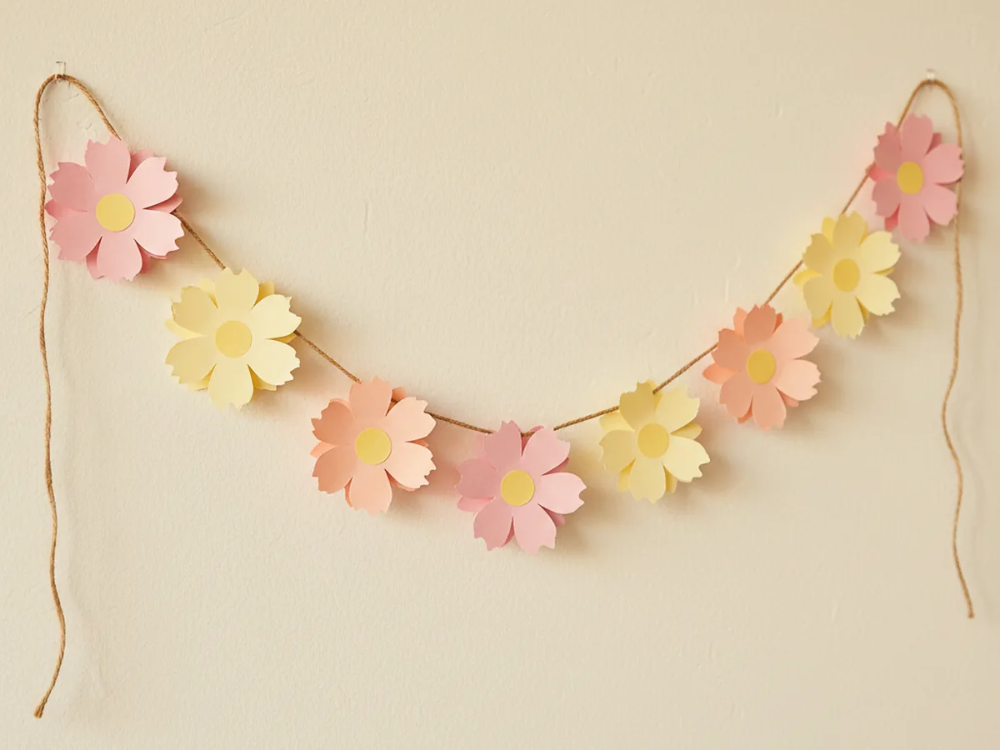
2. Layered Heart Paper Wreath
Cut hearts in three sizes from pink, red, and white paper, then glue them around a paper plate ring with the center cut out. Layer the hearts so each one slightly overlaps the next for a full, fluffy wreath. Tie a ribbon at the top for hanging. This sweet paper wall hanging looks darling on a bedroom door or above a reading nook.
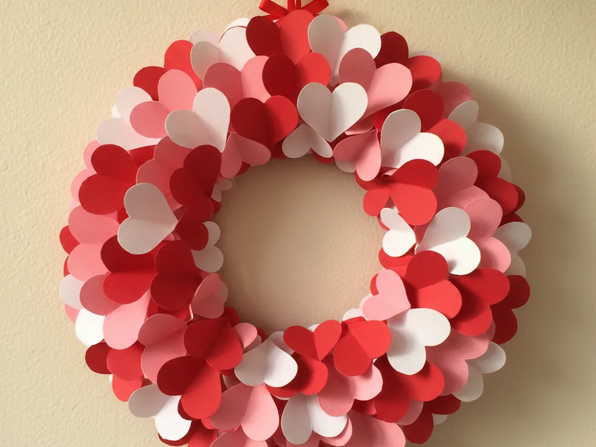
3. Paper Butterfly Wall Display
Trace and cut a flock of butterflies in different sizes and colors, then gently fold each one along the middle so the wings lift up. Stick them across a wall in a flowing diagonal pattern with small bits of removable putty. The 3D wings catch the light and make the wall feel like a little garden. This is one of the most magical paper crafts for wall decoration in a child's bedroom.
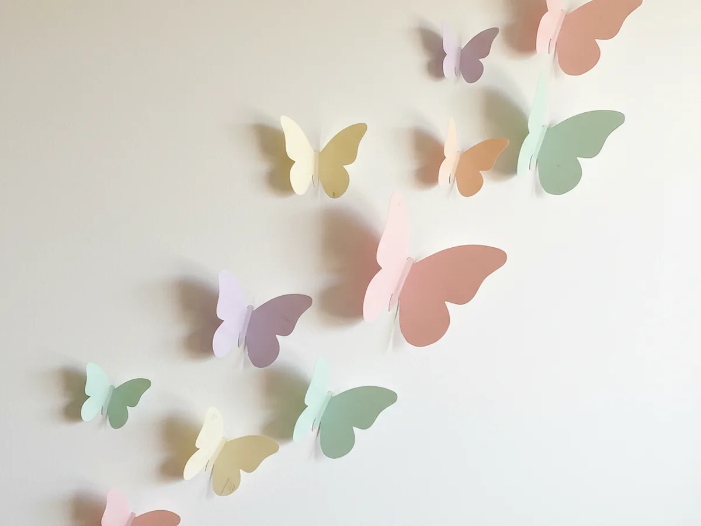
4. Paper Pinwheel Wall Cluster
Make a small group of paper pinwheels from squares of patterned and solid cardstock, pinning each one to a wooden skewer or paper straw. Hang three or four together on a wall in a tight cluster for an instant pop of color. The pinwheels feel playful and a tiny breeze even moves them gently. Your kids will love spinning them whenever they walk by.
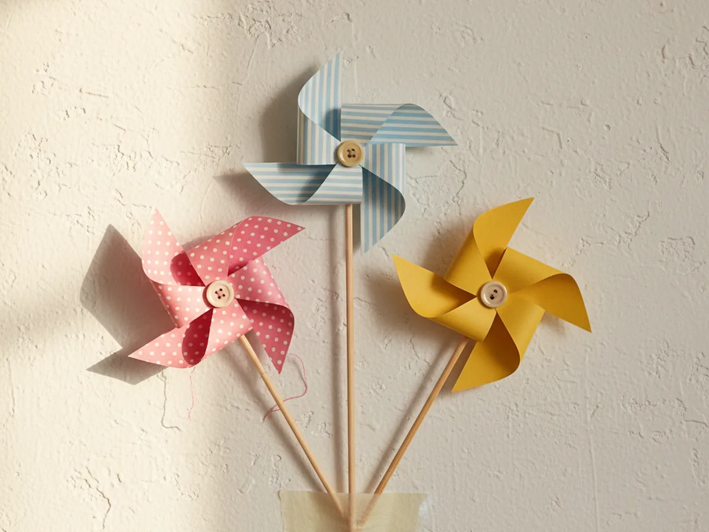
5. Geometric Paper Triangle Bunting
Cut a row of triangle pennants from cardstock in a chosen color palette and let your child decorate each one with stripes, dots, or simple shapes. Tape the tops along a length of twine to make a clean bunting line. Hang it above a desk, a bed, or a play corner. It is a modern, beginner-friendly take on homemade paper craft ideas for wall decoration that suits an older child's room beautifully.
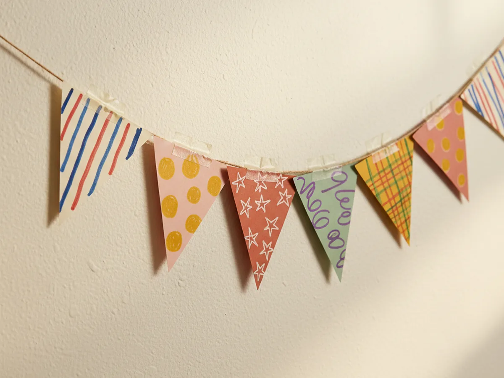
6. Paper Sunburst Wall Decor
Cut a small circle of cardstock for the center of the sun, then surround it with long, thin rays in golden yellow, orange, and warm red paper. Glue everything onto a backing sheet so it stays in shape, then hang it as a single bold piece. The sunburst brings instant warmth to a kitchen wall or playroom. It is a cheerful paper wall art project that works at almost any age. ☀️
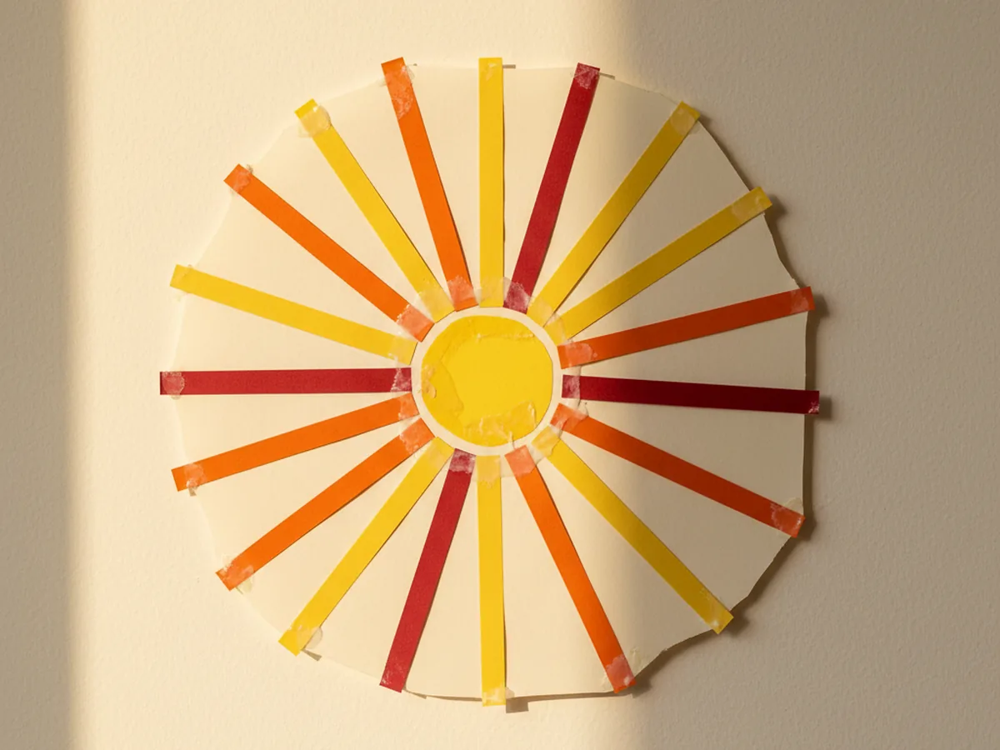
7. Tissue Paper Pom-Pom Garland
Stack five sheets of colorful tissue paper, accordion-fold them together, and tie a piece of string in the middle. Fan out the layers and gently separate each one to form a fluffy pom-pom. String three or four pom-poms across a wall on a length of twine. This soft, dreamy paper garland instantly makes a room feel like a celebration.
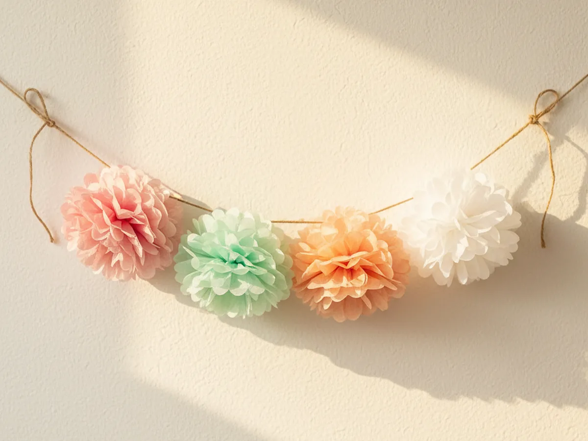
8. 3D Paper Star Cluster
Fold six small paper stars from origami squares or cut and score flat stars in cardstock to give them a gentle pyramid lift. Cluster them on a wall together in a loose constellation shape. Mix metallic gold paper with cream and soft blue for a calm, dreamy palette. These stars look beautiful above a child's bed for a cozy night-time feel.
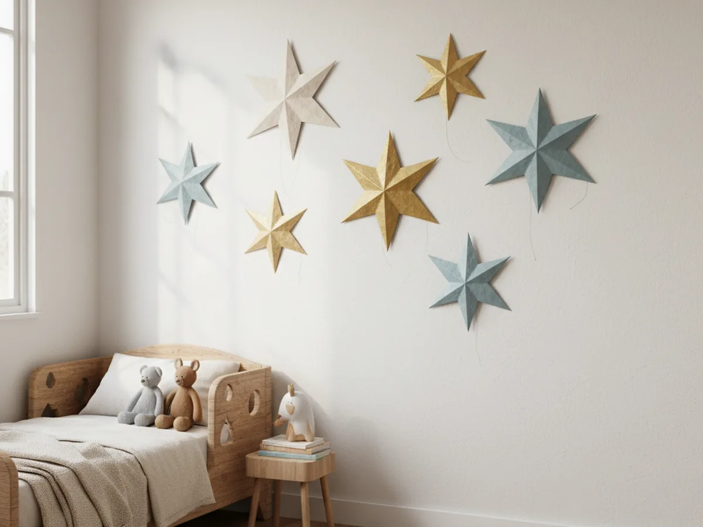
9. Paper Cloud and Raindrop Mobile
Cut two cloud shapes from white cardstock and glue them together with a length of twine sandwiched inside as a hanger. Cut several small raindrops in pale blue and silver and dangle them from the bottom of the cloud on shorter strings. Hang the cloud near a window or above a crib. The raindrops twirl gently and it is one of the calmest homemade paper craft ideas for wall decoration for a nursery.
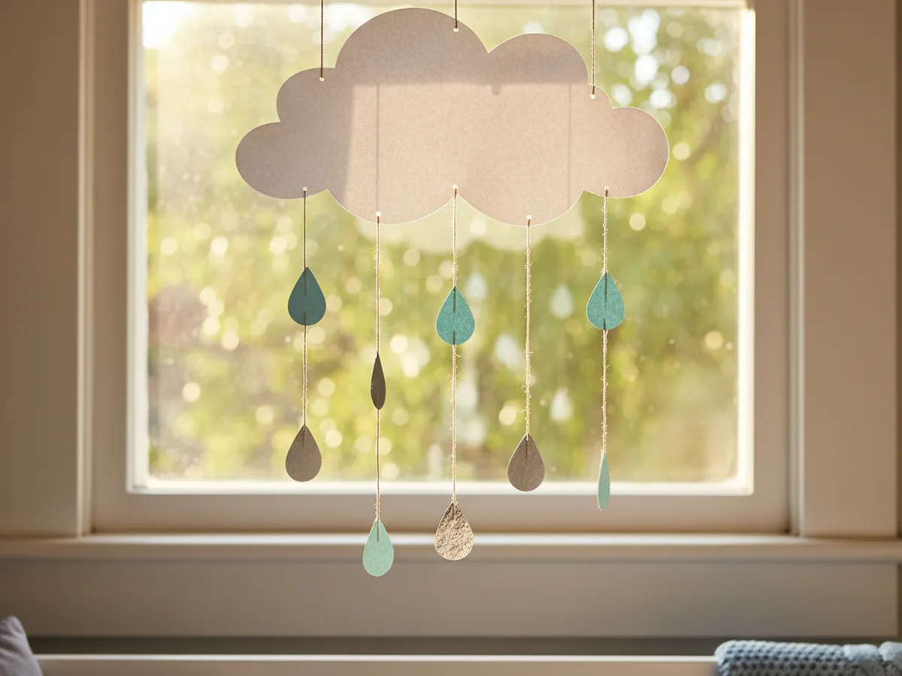
10. Paper Rainbow Wall Hanging
Cut arched strips of paper in red, orange, yellow, green, blue, and purple, then glue them in order onto a cardstock backing to form a rainbow. Add a fluffy white cotton ball cloud at each end and a tiny twine loop at the top for hanging. The result feels happy in any room. Wall decoration paper crafts do not get sweeter than a child's first paper rainbow. 🌈
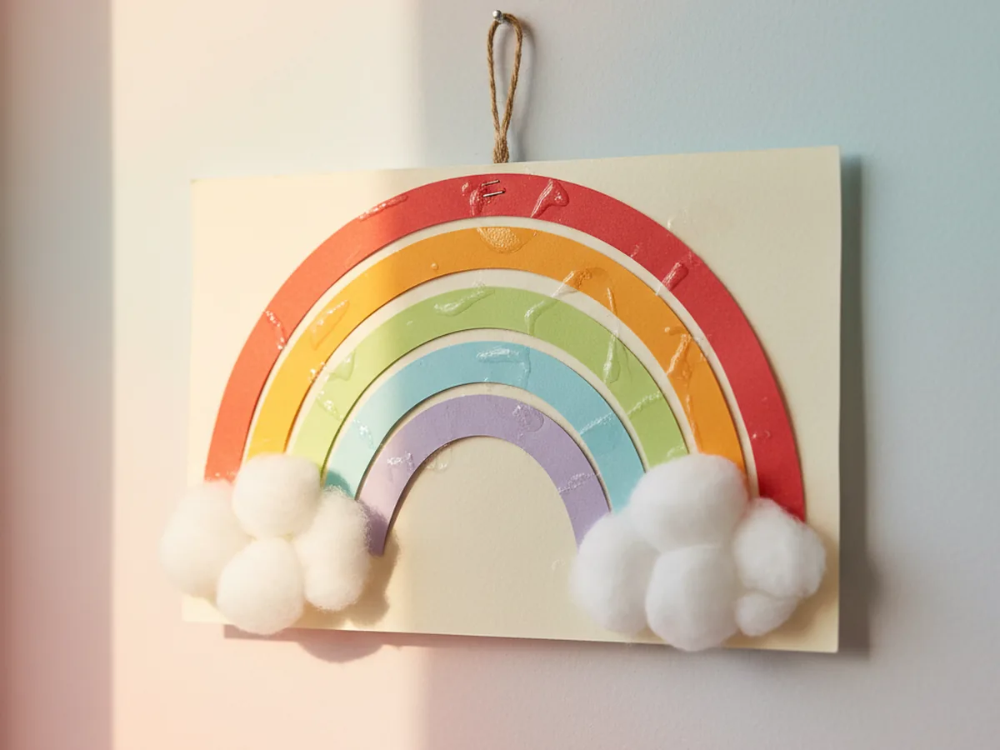
11. Paper Cherry Blossom Branch
Find a slim real branch from the yard, or cut a long branch shape from brown paper. Pinch small squares of pink tissue paper around the tip of a pencil to form little blossoms and glue them along the branch. Mount the branch on the wall horizontally or in a clear vase. This is one of the most elegant paper crafts for wall decoration and it stays pretty for months.
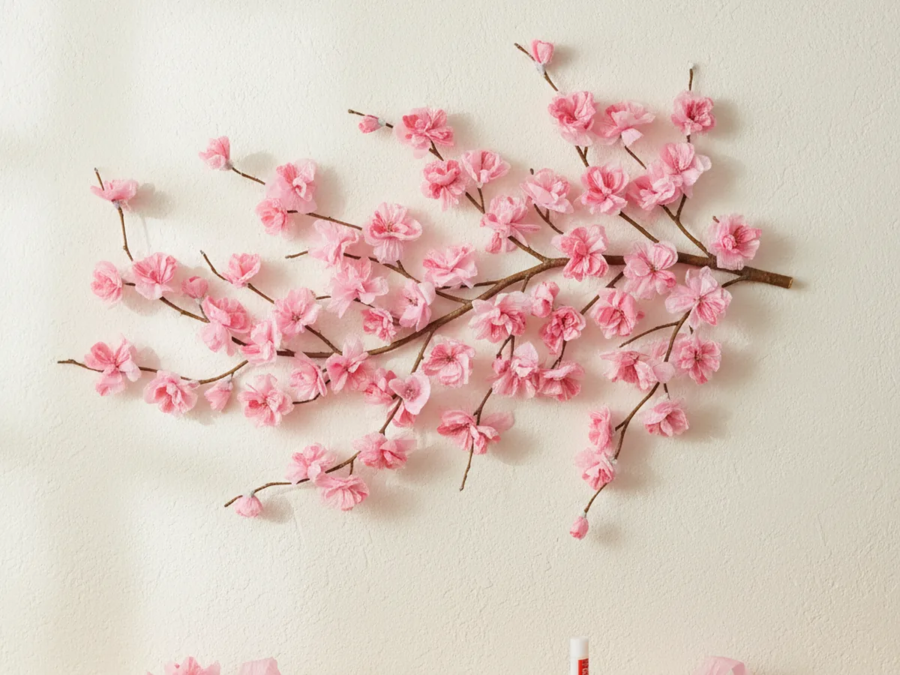
12. Honeycomb Paper Wall Pops
Pick up a small set of pre-made paper honeycomb balls, or fold flat honeycomb shapes from tissue paper and let them open up into 3D rounds. Hang three or four against a plain wall at different heights using small thread loops. They give the room a soft, party-like feel without being over the top. These are wonderfully forgiving homemade paper craft ideas for wall decoration if you want big impact with little effort.
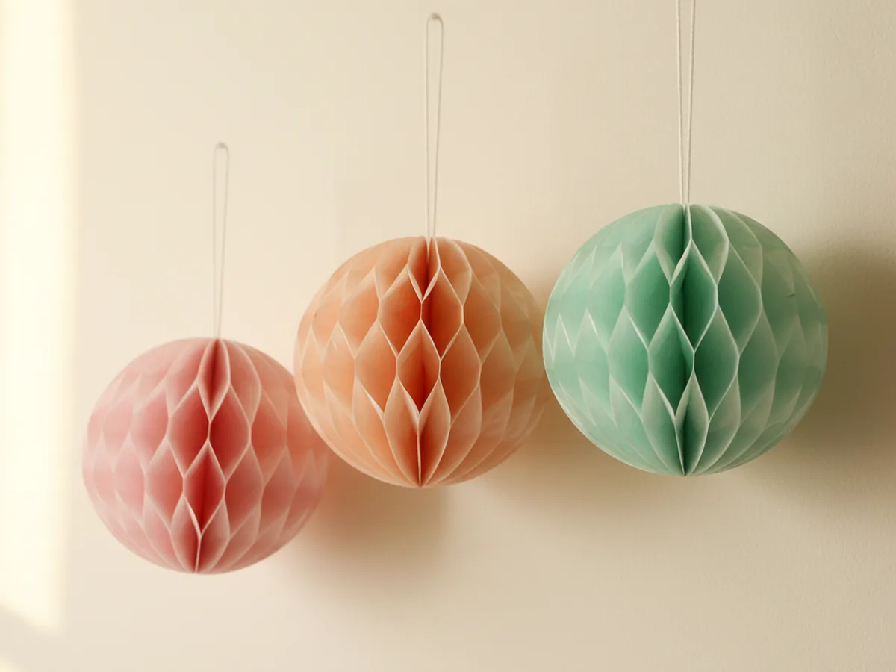
13. Paper Picture Frame Display
Cut simple rectangle paper frames from colored cardstock with a slightly smaller window cut from the center. Let your child decorate the borders with marker doodles or sticker dots, then tape a piece of their artwork or a family photo inside each frame. Hang a row of them along a hallway. The handmade frames give every drawing the spotlight it deserves.
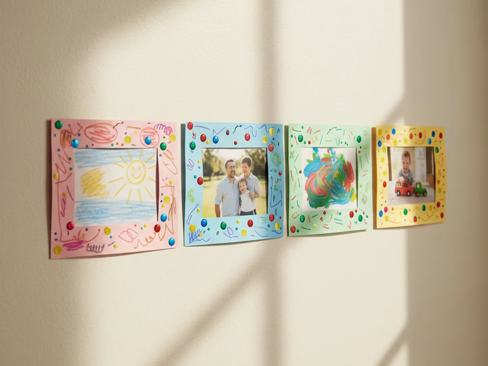
14. Paper Leaf Garland Wall Art
Cut leaf shapes from green, ochre, and warm red paper, then attach them onto a long piece of twine using small staples or glue dots. Drape the leaf garland across a mantle or up the side of a doorway. This is a lovely seasonal paper wall garland for fall, and it works just as well in a kitchen as in a bedroom.
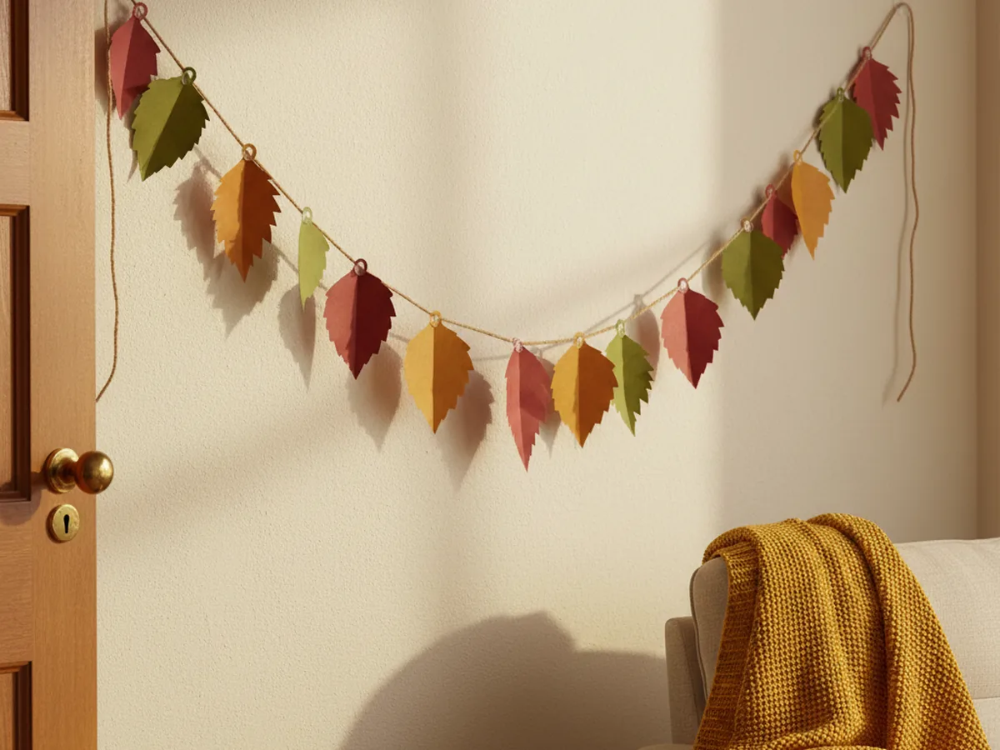
15. Paper Doily Mandala Wall Art
Layer three or four paper doilies in different sizes onto a square of pastel cardstock, gluing the smaller ones on top of the larger ones to form a soft mandala pattern. Press the cardstock into a simple frame or hang it directly. The lacy texture looks much more sophisticated than the supplies suggest. It is a quiet, lovely option among paper wall decoration crafts for an older child to make alongside you.
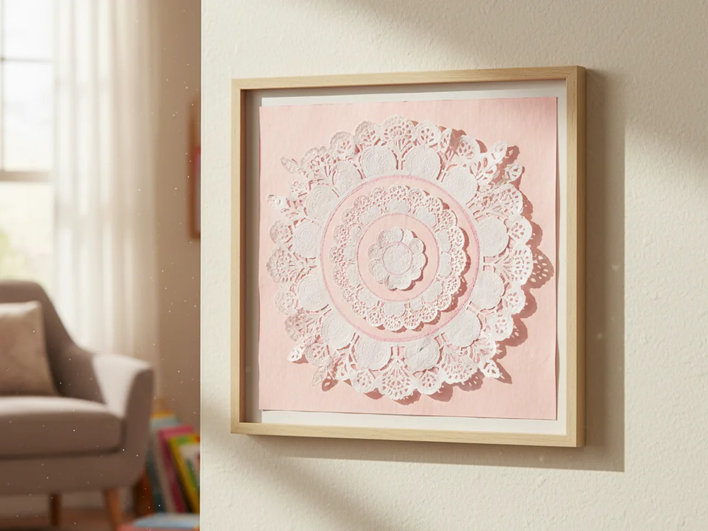
16. Paper Fan Wall Display
Accordion-fold pieces of patterned paper and secure each fan at the bottom with a small dab of glue. Open the fans into half-circle or full-circle shapes and arrange a cluster of them on the wall in coordinating colors. The folds catch the light and look much fancier than they are. This is a stunning paper wall decoration project for above a sofa or a buffet table.
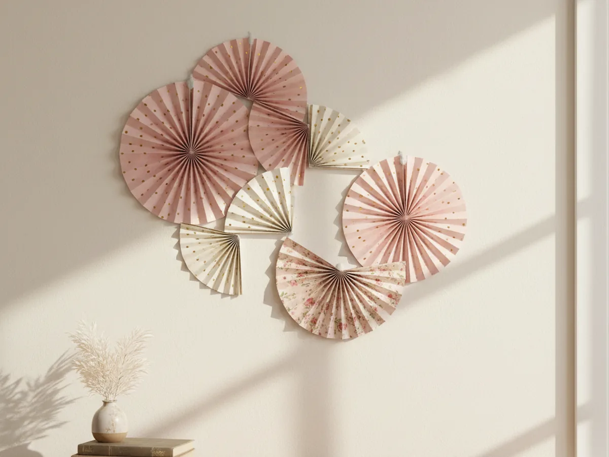
17. Family Handprint Tree Wall Art
Trace and cut every family member's handprint from colored paper, then glue them onto a large brown paper trunk like leaves on a tree. Add a few extra paper leaves so the tree looks full. Frame the finished piece or mount it directly onto the wall. This is the most personal of all the homemade paper craft ideas for wall decoration, and it always becomes the favorite piece in the room. 💛
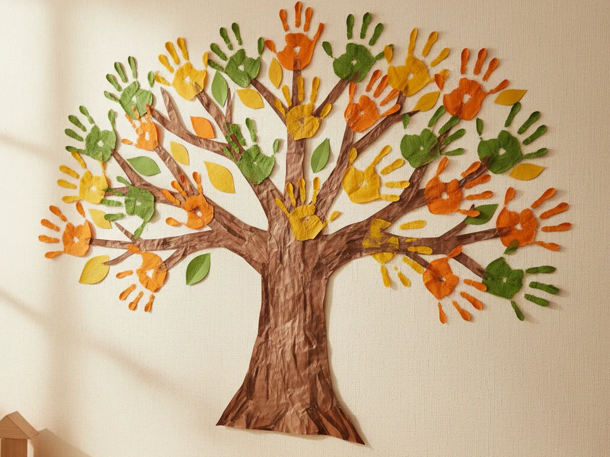
18. Paper Name Letter Wall Art
Cut large letters that spell your child's name from patterned scrapbook paper or hand-decorated cardstock. Mount the letters in a clean horizontal line above their bed. You can stick to one color theme or let each letter be a different print. This personal paper wall art turns any plain wall into the heart of a child's bedroom.
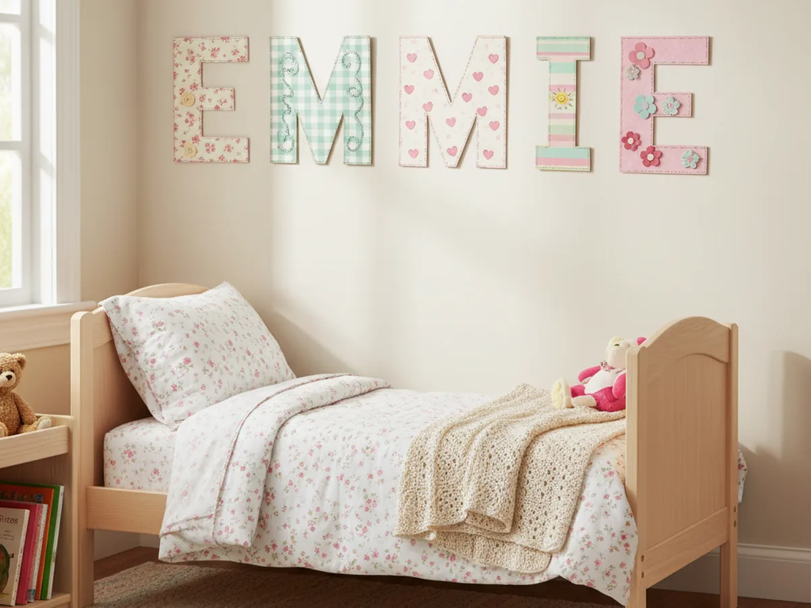
19. Quilled Paper Initial Frame
Roll thin strips of colored paper into tight little coils and use them to fill in a large outlined letter on cardstock. The quilling looks intricate but is honestly very easy once you start. Slip the finished letter into a small frame and hang it on the wall. This is one of the most charming paper crafts for wall decoration for a slightly older child who loves quiet, detailed work.
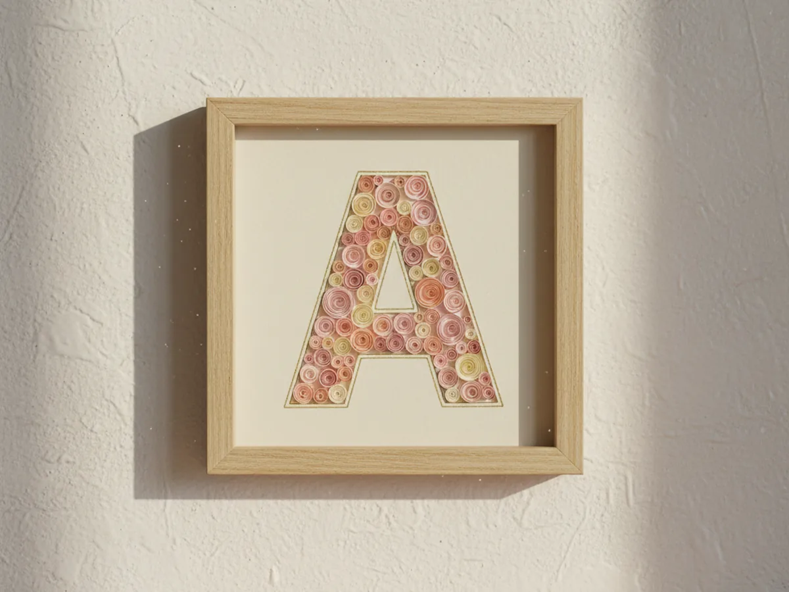
20. Origami Crane Wall Hanging
Fold a small flock of origami cranes in shades of pink, white, and gold paper, then string them together vertically on a piece of thread. Hang two or three strings side by side along a wall. The cranes seem to float and the whole piece feels graceful and calming. If you are new to origami, the traditional paper crane fold is a sweet first project to learn alongside your child.
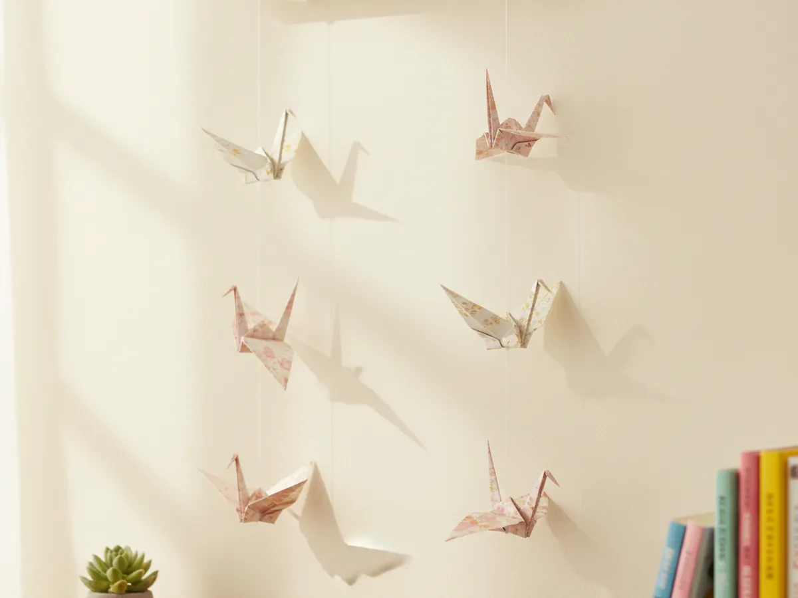
Final Thoughts
The lovely thing about homemade paper craft ideas for wall decoration is that the materials are gentle, the cleanup is easy, and the finished piece is something your child will point to with quiet pride every time you walk past. A few sheets of paper turn into a moment together, and that moment becomes the wall art you actually want to keep.
Pick the one that fits the spot you want to brighten, gather your supplies, and give yourselves a slow hour together. The crafts are sweet, but the warm little memories are the real keepsake on every wall. 💛
More Crafts You'll Love
If you and your kids are in a paper crafting mood, these two pair beautifully with anything on this list.
Happy crafting, and enjoy every quiet little wall-art moment you make together.